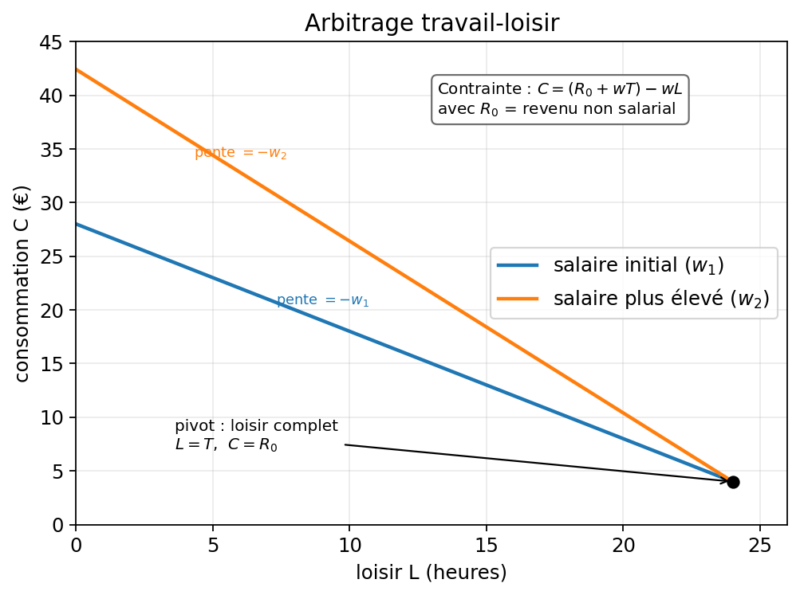
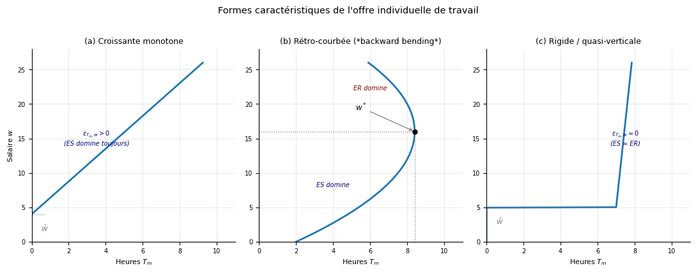
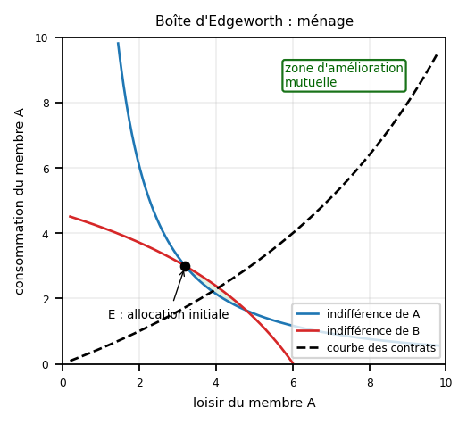
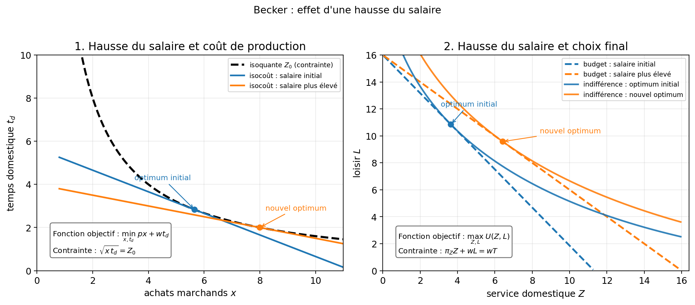
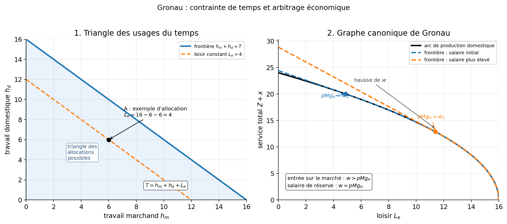
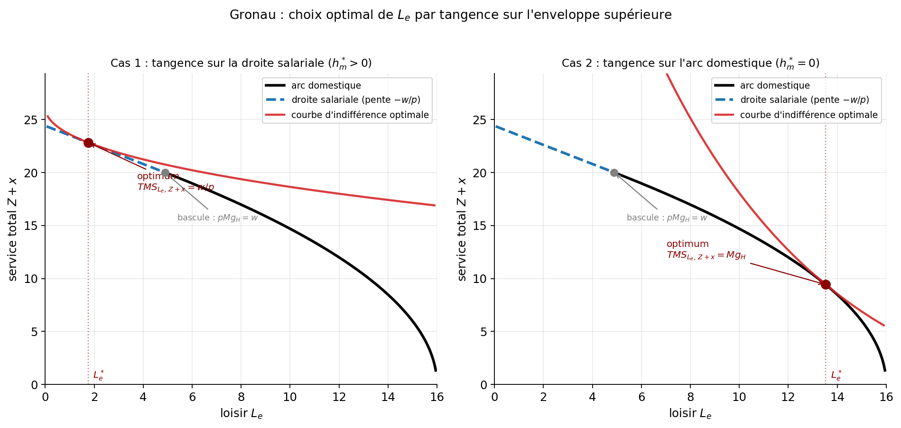

Chapitre 11 — Arbitrage travail-loisir
Question du chapitre
Comment un individu arbitre-t-il entre temps travaillé, temps libre et consommation ?
Idée à comprendre d’abord
Le loisir est un bien particulier : pour en consommer davantage, il faut renoncer à du revenu salarial. Le salaire joue donc deux rôles dans l’arbitrage travail-loisir. Son rôle premier de rémunération du temps travaillé mais aussi le rôle de coût d’opportunité du loisir.
Même méthodologie
La façon d’aborder le problème est la même que dans les chapitres précédents :
- on étudie un arbitrage entre deux objets,
- on écrit la contrainte qui borne les choix possibles,
- on caractérise l’optimum d’une fonction objectif sous cette contrainte,
- puis on analyse la réaction du comportement lorsque les conditions changent.
Ici, ces deux objets ne sont plus deux biens ordinaires, mais le loisir et la consommation.
Autre modèle de problème
Dans les chapitres précédents, on arbitrait entre deux biens \(x_1\) de prix \(p_1\) et \(x_2\) de prix \(p_2\) pour maximiser une utilité \(U(x_1,x_2)\) sous la contrainte budgétaire \(R = p_1x_1 + p_2x_2\) où \(R\) était un revenu maximum disponible.
Ici, on arbitre entre la consommation \(C\) permise par le revenu du travail et un temps de loisir \(T_l\) tous deux valorisés par \(w\). On cherche à maximiser une utilité \(U(T_l,C)\) sous la contrainte \(R_0 + wT_w = C + wT_l\) où \(R_0\) est un revenu exogène, \(T_w\) et \(T_l\) les temps de travail marchand et de loisir.
Le problème introduit donc une dotation de temps total \(t_{tot}\) à allouer entre \(t_m\) et \(t_l\). \(R_0 + wt_{tot}\) représente les ressources initiales totales.
11.1. Cadre de base et contrainte budgétaire
L’individu dispose d’un temps total \(T_{tot}\) réparti entre loisir \(T_l\) et travail \(T_m\) :\(T_{tot}=T_l+T_m\)
Avec un salaire horaire \(w\), un revenu non salarial \(R_0\) et un prix de la consommation \(p_C\), la contrainte budgétaire générale s’écrit : \(p_C C = R_0 + w(T_{tot}-T_l)\). Par convention, on normalise \(p_C = 1\), ce qui signifie que \(C\) s’exprime directement en numéraire (en euros) et joue le rôle de bien composite. La contrainte se réduit alors à : \(C=R_0+w(T_{tot}-T_l)\)
soit : \(C=(R_0+T_{tot})-wT_l\)
Dans le plan \((T_l,C)\), la pente de la droite de contrainte budgétaire vaut : \(-w\)
et son ordonnée à l’origine: \(R_0+T_{tot}\)
Plus le salaire est élevé, plus une heure de loisir coûte cher en consommation renoncée.
11.2. Choix optimal
L’individu maximise :
\[ U(T_l,C) \]
Quand l’optimum est intérieur, l’individu ne choisit ni le loisir complet ni le travail complet : il combine donc un peu de loisir et un peu de travail. Dans ce cas, la courbe d’indifférence est tangente à la droite de contrainte budgétaire. On a alors :
\[ TMS_{T_l,C}=w \]
Le taux auquel l’individu est prêt à échanger loisir et consommation s’aligne sur le salaire du marché. En termes graphiques, à l’optimum intérieur, la pente de la courbe d’indifférence égale la pente de la contrainte en valeur absolue.
Méthode directe. On peut réécrire le problème en remplaçant \(C = R_0 + w(T_{tot}-T_l)\) dans la fonction d’utilité, puis maximiser sans contrainte la fonction composée :
\[f(T_l) = U\!\bigl(T_l,\; \underbrace{R_0 + w(T_{tot}-T_l)}_{=\,C(T_l)}\bigr).\]
Dérivation par la règle de dérivation en chaîne. \(U\) dépend de deux arguments, et le premier (\(C\)) dépend lui-même de \(T_l\). La règle de dérivation en chaîne donne :
\[f'(T_l) = \frac{\partial U}{\partial T_l}\cdot 1 + \frac{\partial U}{\partial C}\cdot\frac{dC}{dT_l} = U_{T_l}' + U_C'\cdot(-w).\]
Le terme \(\frac{dC}{dT_l} = -w\) vient directement de la contrainte : une heure de loisir supplémentaire réduit le revenu du travail de \(w\), donc la consommation de \(w\).
Condition du premier ordre (CPO). À l’optimum intérieur \(T_l^*\), on annule cette dérivée :
\[f'(T_l^*) = 0 \;\Longrightarrow\; U_{T_l}' - w \cdot U_C' = 0,\]
soit \(U_{T_l}'/U_C' = w\), c’est-à-dire \(TMS = w\).
Pourquoi c’est un maximum. La CPO seule ne garantit qu’un point critique. C’est la quasi-concavité stricte de \(U\) (équivalente à des courbes d’indifférence strictement convexes) qui assure que ce point critique est bien un maximum global — la condition du second ordre (CSO) est donc superflue ici.
Cette substitution directe est souvent plus rapide que le Lagrangien en exercice, notamment quand la forme fonctionnelle est simple.
Méthode du Lagrangien. On forme le Lagrangien en ajoutant la contrainte multipliée par un multiplicateur \(\lambda\) :
\[\mathcal{L}(T_l, C, \lambda) = U(T_l, C) + \lambda\bigl[R_0 + w(T_{tot} - T_l) - C\bigr].\]
Le terme entre crochets est la contrainte réécrite sous la forme \((\text{revenu disponible}) - C = 0\) : il vaut zéro à l’optimum.
Conditions du premier ordre. On annule les dérivées partielles par rapport à chaque variable :
\[\frac{\partial \mathcal{L}}{\partial T_l} = U_{T_l}' - \lambda w = 0 \;\Longrightarrow\; \lambda = \frac{U_{T_l}'}{w},\]
\[\frac{\partial \mathcal{L}}{\partial C} = U_C' - \lambda = 0 \;\Longrightarrow\; \lambda = U_C',\]
\[\frac{\partial \mathcal{L}}{\partial \lambda} = R_0 + w(T_{tot} - T_l) - C = 0 \quad \text{(la contrainte est saturée).}\]
Combinaison des deux premières CPO. En égalisant les deux expressions de \(\lambda\) :
\[U_C' = \frac{U_{T_l}'}{w} \;\Longrightarrow\; \frac{U_{T_l}'}{U_C'} = w,\]
soit \(TMS = w\) — même résultat que la méthode directe.
Interprétation de \(\lambda\). La CPO \(\partial\mathcal{L}/\partial C = U_C' - \lambda = 0\) donne directement \(\lambda = U_C'\) : le multiplicateur est l’utilité marginale du revenu. C’est le gain d’utilité procuré par un euro supplémentaire de revenu disponible — autrement dit, le prix implicite de la contrainte budgétaire.
Pourquoi c’est un maximum. Comme pour la méthode directe, la quasi-concavité stricte de \(U\) garantit que le point critique est un maximum global.
11.3. Hausse du salaire
Une hausse de \(w\) produit deux effets :
- effet substitution : le loisir devient plus cher, donc on travaille davantage ;
- effet revenu : si le loisir est un bien normal, le revenu plus élevé pousse à vouloir plus de loisir.
11.4. Salaire de réserve
Le salaire de réserve est le salaire minimal à partir duquel l’individu accepte de travailler.
Si le salaire de marché est inférieur à ce seuil, l’individu choisit le loisir complet (\(T_l=T_{tot}\)). S’il lui est supérieur, il offre une quantité positive de travail.
11.5. Courbe d’offre individuelle de travail
La courbe d’offre individuelle de travail représente, pour chaque niveau de salaire \(w\), la quantité de travail \(T_m^*(w)\) choisie à l’optimum. Elle se construit en résolvant le problème de maximisation de 11.2 pour chaque valeur de \(w\) et en lisant \(T_m^*(w) = T_{tot} - T_l^*(w)\).
Pour \(w < \bar{w}\) (salaire de réserve), l’individu est en coin : \(T_m^* = 0\). Pour \(w > \bar{w}\), il offre un nombre positif d’heures. La courbe est d’abord croissante — l’effet substitution domine — puis peut se recourber vers le bas lorsque l’effet revenu prend le dessus : c’est l’offre rétro-courbée (backward bending).
Lien avec la courbe de demande. C’est exactement la même construction que la courbe de demande du chapitre 6 : on fait varier le paramètre exogène (\(w\) ici, \(p_1\) là-bas), on lit l’optimum pour chaque valeur, et on trace la courbe résultante. Deux différences cependant. D’abord, la construction de la courbe de demande passe par une étape intermédiaire — la courbe prix-consommation dans le plan \((x_1, x_2)\) — avant de projeter sur un seul bien ; ici on va directement dans le plan \((T_m, w)\), car c’est la seule quantité qui nous intéresse. Ensuite, la courbe d’offre de travail peut être rétro-courbée, ce qui n’arrive pas pour la courbe de demande d’un bien ordinaire : c’est la conséquence du double rôle du salaire, à la fois prix du loisir et source de revenu.
11.6. Élasticité de l’offre de travail et offre rétro-courbée
L’élasticité de l’offre de travail mesure la sensibilité des heures offertes à une variation du salaire :
\[ \varepsilon_{T_m,w} = \frac{\partial T_m}{\partial w} \cdot \frac{w}{T_m} \]
- \(\varepsilon_{T_m,w} > 0\) : offre croissante (effet substitution domine) ;
- \(\varepsilon_{T_m,w} < 0\) : offre décroissante (effet revenu domine) ;
- \(\varepsilon_{T_m,w} \approx 0\) : offre rigide, peu sensible au salaire.
Les principaux facteurs qui influencent l’élasticité sont : le niveau du revenu non salarial \(R_0\), l’intensité de la préférence pour le loisir, les contraintes institutionnelles (temps partiel, conventions collectives, fiscalité).
Offre rétro-courbée. Quand l’effet revenu finit par dominer l’effet substitution, il existe un salaire de retournement \(w^*\) au-delà duquel \(\varepsilon_{T_m,w}\) devient négatif et l’offre se rétracte. Ce retournement n’est pas universel : si l’effet substitution domine à tout salaire, l’offre reste croissante et \(w^*\) n’existe pas.
11.7. Élasticité de la demande de loisir
L’élasticité de la demande de loisir au salaire réel s’écrit :
\[ \varepsilon_{T_l,w} = \frac{\partial T_l}{\partial w} \cdot \frac{w}{T_l} \]
Elle est reliée à l’élasticité de l’offre de travail par :
\[ \varepsilon_{T_m,w} = -\frac{T_l}{T_m} \cdot \varepsilon_{T_l,w} \]
Les signes sont toujours opposés : pour \(w < w^*\), l’ES domine, \(\varepsilon_{T_m,w} > 0\) et \(\varepsilon_{T_l,w} < 0\) — le loisir devient plus cher, l’individu en consomme moins. Pour \(w > w^*\), l’ER domine, \(\varepsilon_{T_m,w} < 0\) et \(\varepsilon_{T_l,w} > 0\) — l’individu plus riche achète davantage de loisir et réduit son offre de travail.
11.8. Boîte d’Edgeworth appliquée au ménage
Dans un ménage à deux membres, la répartition du temps et des ressources peut se représenter dans une boîte d’Edgeworth. Chaque membre a ses propres préférences entre loisir et consommation. La boîte fait apparaître :
- les allocations efficaces au sens de Pareto — la courbe des contrats — le long desquelles on ne peut améliorer le bien-être d’un membre sans réduire celui de l’autre ;
- la zone Pareto-supérieure aux dotations initiales ;
- les possibilités de négociation et de transferts intra-ménage.
Interprétation économique. L’efficacité intra-familiale est atteinte lorsqu’on se place sur la courbe des contrats. Elle dépend des salaires respectifs, des préférences et de la technologie de production domestique.
La courbe des contrats comme continuum d’optima. La courbe des contrats n’est pas un point mais un continuum d’allocations efficaces. Il existe une infinité d’optima Pareto, du coin de A au coin de B. L’efficacité au sens de Pareto ne sélectionne pas un seul optimum — elle délimite un ensemble. C’est le pouvoir de négociation, les droits de propriété ou les règles institutionnelles qui déterminent lequel est effectivement atteint.
Négociation et point retenu. La boîte d’Edgeworth montre les allocations efficaces au sein du ménage, mais elle ne détermine pas le point final. Celui-ci dépend du pouvoir de négociation, des revenus propres, des salaires relatifs et des règles de partage.
11.9. Économie de la famille
Becker (1965, 1981) : allocation du temps et spécialisation. Becker (1965) montre que le ménage produit des activités finales (commodities) en combinant temps et biens marchands, et valorise chaque usage du temps par son coût d’opportunité. Certaines activités — cuisine, garde d’enfants, entretien — produisent des biens domestiques qui substituent ou complètent la consommation marchande ; l’arbitrage entre internalisation et recours au marché dépend des prix relatifs. Dans ce cadre, le ménage est traité comme un agent unique. Becker (1981, A Treatise on the Family) modélise explicitement les caractéristiques propres à chaque membre — salaire, productivité domestique — et dérive la spécialisation qui en résulte : l’efficacité commande que le membre au salaire plus élevé se spécialise dans le travail marchand pendant que l’autre prend en charge la production domestique, suivant la logique des avantages comparatifs appliquée au foyer.
Gronau (1977). Distingue trois usages du temps : travail marchand, travail domestique et loisir pur. Contrairement à Becker, le loisir n’entre pas dans la fonction de production domestique ; il s’agit d’un usage direct du temps par l’individu.
Limites. Ces modèles supposent un ménage unitaire — une seule fonction d’utilité agrégée — ce qui efface les préférences individuelles et neutralise d’emblée tout conflit d’intérêt. Cette hypothèse implique notamment l’income pooling : seul le revenu total du ménage importerait, quelle qu’en soit la source. L’évidence empirique la contredit — Lundberg, Pollak & Wales (1997) montrent que transférer des ressources vers la mère modifie la structure des dépenses du ménage, et Thomas (1990) trouve des effets similaires sur la santé des enfants. La source du revenu n’est donc pas neutre, ce que le modèle unitaire est incapable de saisir.
Modèles collectifs (Chiappori 1988, 1992). La réponse canonique à ces limites. Chaque membre conserve ses propres préférences ; la seule hypothèse retenue est l’efficacité Pareto du résultat — sans imposer une utilité unique ni une solution de négociation spécifique. L’identification empirique des règles de partage repose sur les distribution factors : des variables qui affectent le pouvoir de négociation relatif des membres — revenus non-salariaux individualisés, droits légaux, conditions du marché matrimonial — sans modifier les préférences ni le budget total. Ce levier permet de récupérer les règles de partage intra-ménage à partir des comportements observés, ce que le modèle unitaire rend impossible par construction.
Perspectives critiques et histoire de la pensée
Robinson Crusoé chez les économistes. Le modèle travail-loisir suppose un agent isolé qui maximise sous contrainte de temps — c’est précisément la figure de Robinson Crusoé, mobilisée par les économistes classiques pour illustrer le comportement rationnel. Marx s’en moque dans Le Capital (1867) : Robinson est une fiction commode qui efface les relations sociales de production en les réduisant à un calcul individuel. Edgeworth, dans Mathematical Psychics (1881), modélise quant à lui l’échange entre deux agents dotés de biens — c’est l’origine de la boîte d’Edgeworth — et montre que dès qu’il y a deux agents, les questions de répartition et de négociation deviennent inévitables.
Gorz : le loisir colonisé. Dans Métamorphoses du travail (1988), André Gorz soutient que dans les sociétés marchandes, le loisir lui-même est progressivement colonisé par la logique productive : il se transforme en temps de consommation, de récupération ou de formation, perdant son caractère de fin en soi. Le modèle néoclassique traite le loisir comme un bien parmi d’autres, soumis au même calcul d’utilité — ce que Gorz lit comme une réduction du temps libre à un temps socialement utile pour la reproduction de la force de travail. Cette critique ne réfute pas le modèle, mais en délimite la portée : il décrit un comportement d’arbitrage, pas la valeur du loisir comme expérience vécue.
Graphique — Arbitrage travail-loisir
Ce qu’il faut voir. Ici, le loisir est sur l’axe horizontal et la consommation sur l’axe vertical. Quand le salaire augmente, la contrainte devient plus pentue et pivote autour du point \((T,R_0)\), car le loisir coûte davantage en consommation renoncée tandis que le loisir complet laisse toujours la consommation égale à \(R_0\).
Comment le lire vite. Repère d’abord le point fixe \((T,R_0)\), puis compare la pente des deux droites budgétaires. Ce graphique montre donc surtout comment la contrainte change quand le salaire augmente ; il ne montre pas encore, à lui seul, la décomposition entre effet substitution et effet revenu.
Salaire de réserve — lecture graphique. Au point de loisir complet \((L=T)\), la consommation est réduite à \(C=R_0\). Si \(w\) est trop faible, la pente de la droite de budget est inférieure au \(TMS_{L,C}\) évalué en \((T, R_0)\) : la courbe d’indifférence est plus pentue que la contrainte, et l’individu ne peut pas améliorer son utilité en réduisant son loisir — il reste à l’optimum en coin \(L=T\). Le salaire de réserve \(\bar{w}\) est précisément le salaire pour lequel la droite de budget est tangente à la courbe d’indifférence au point \((T, R_0)\) :
\[ \bar{w} = TMS_{L,C}\big|_{L=T,\; C=R_0} \]
Au-delà de ce seuil, la contrainte coupe la courbe d’indifférence et l’individu a intérêt à offrir du travail.
Point concours. Ce graphique montre bien le pivot de la contrainte, mais pas encore la séparation entre effet substitution et effet revenu. Pour aller plus loin, il faudrait appliquer une des méthodes de décomposition de Hicks ou Slutsky présentées au chapitre 8.
Graphique — Offre de travail individuelle : formes caractéristiques
Le graphique présente trois formes canoniques de l’offre individuelle de travail \(T_m^*(w)\) dans le plan \((T_m, w)\). Dans chaque cas, la courbe est la trace des optima du problème de maximisation de 11.2 ; sa forme dépend entièrement des préférences, via le rapport entre effet substitution (ES) et effet revenu (ER).
(a) Croissante monotone. L’ES domine à tout niveau de salaire : une hausse de \(w\) rend le loisir plus coûteux, l’individu en consomme moins et offre davantage d’heures (\(\varepsilon_{T_m,w} > 0\) partout). Cas typique des travailleurs à faible revenu non salarial ou à faible préférence pour le loisir. En deçà du salaire de réserve \(\bar{w}\), l’individu ne travaille pas (solution de coin).
(b) Rétro-courbée (backward bending). À bas salaire l’ES domine (\(\varepsilon_{T_m,w} > 0\)) ; au-delà du salaire de retournement \(w^*\), l’ER l’emporte — l’individu plus riche achète davantage de loisir et réduit ses heures (\(\varepsilon_{T_m,w} < 0\)). L’existence de \(w^*\) dépend des préférences : elle n’est pas garantie.
(c) Rigide / quasi-verticale. ES et ER se compensent presque entièrement (\(\varepsilon_{T_m,w} \approx 0\)) : les heures varient peu avec le salaire. Cette forme peut aussi résulter de contraintes institutionnelles (horaires contractuels fixes, conventions collectives) qui empêchent tout ajustement à la marge. L’offre “saute” au salaire de réserve \(\bar{w}\) puis reste quasi-constante.

Graphique — Boîte d’Edgeworth appliquée au ménage
Ce qu’il faut voir. La boîte représente l’ensemble des répartitions possibles d’un volume total de loisir et de consommation entre deux membres du ménage. C’est donc un plan “loisir / consommation” borné par les quantités totales disponibles : l’origine de A est située en bas à gauche, tandis que l’origine de B est située dans le coin opposé, en haut à droite. Chaque point indique les quantités de loisir et de consommation attribuées à A, et, par différence avec les quantités totales disponibles, les quantités attribuées à B.
Pourquoi la courbe de B est-elle “dans l’autre sens” ? Parce qu’on représente ici les quantités du membre A sur les axes. Quand on se déplace vers la droite ou vers le haut, A reçoit davantage de loisir ou de consommation ; comme les quantités totales sont fixes, B en reçoit moins. Pour savoir si B est mieux ou moins bien loti, il faut lire le point par rapport aux courbes d’indifférence de B, dont l’origine est située en haut à droite. Les courbes d’indifférence de B semblent donc “retournées” par rapport à la représentation standard.
Lentille d’amélioration mutuelle. À partir du point initial \(E\), les deux courbes d’indifférence passant par \(E\) délimitent les allocations qui sont au moins aussi bonnes que \(E\) pour chacun des deux membres du ménage. La lentille d’amélioration mutuelle est la zone où ces deux ensembles se recoupent : elle contient les allocations qui améliorent la situation d’au moins un membre sans détériorer celle de l’autre.
Comment atteint-on la courbe des contrats ? À partir de la dotation initiale \(E\), les membres du ménage ont intérêt à se réallouer temps et ressources tant qu’il existe un point dans la lentille qui améliore la situation de l’un sans détériorer celle de l’autre. Le processus s’arrête quand ces gains mutuels sont épuisés : on atteint alors un point de la courbe des contrats, c’est-à-dire une allocation efficace au sens de Pareto (améliorer la situation de l’un détériore celle de l’autre). Quand on atteint une allocation Pareto-efficace, la lentille d’amélioration mutuelle a disparu.
Lecture économique. La courbe des contrats relie les allocations efficaces, c’est-à-dire les allocations où il n’est plus possible d’améliorer la situation d’un membre du ménage sans détériorer celle de l’autre. Mais elle ne dit pas à elle seule quel point sera effectivement retenu. Ce point dépend de la négociation : un membre peut accepter une réorganisation du temps et de la consommation en échange d’une compensation, ou capter une plus grande part du surplus si son pouvoir de négociation est plus élevé. Le résultat dépend donc du pouvoir de négociation, des salaires relatifs, des préférences et, plus largement, des règles de partage au sein du ménage.
Pourquoi ce graphique est utile ici. Il permet de visualiser comment un ménage peut réorganiser le partage du temps et de la consommation entre ses membres. À partir d’une situation initiale \(E\), on voit s’il existe des répartitions qui rendent au moins un membre mieux loti sans pénaliser l’autre. Le graphique montre aussi que l’efficacité ne règle pas tout : même une fois les gains mutuels épuisés, plusieurs répartitions efficaces restent possibles, et le choix final dépend de la négociation au sein du ménage.

Graphique — Becker : production domestique en deux étapes
Idée générale. Chez Becker, le ménage produit différentes activités finales ou “commodities” en combinant du temps non marchand et des biens marchands. Le loisir peut faire partie de ces commodities. Le ménage maximise l’utilité de ces activités finales. Dans une version simplifiée, on distingue un service domestique \(Z\), produit avec des achats marchands \(x\) et du temps \(t_d\) et du loisir \(L\) produit avec du temps \(t_l\).
Variables. \(Z\) désigne le niveau de service domestique ; \(x\) les achats marchands ; \(t_d\) le temps alloué à la production de \(Z\) ; \(L\) le loisir produit; \(t_l\) le temps alloué au loisir ; \(p\) le prix des achats marchands ; \(w\) le salaire horaire ; \(t_{tot}\) le temps total disponible. Dans cet exemple simplifié, on ne détaille pas la fonction de production de L : Becker valorise \(L\) au coût d’opportunité du temps passé soit \(wt_l\).
Contrainte de temps. La contrainte temporelle complète est \(t_{tot} = t_m + t_d + t_l\) où \(t_m\) est le temps marchand qui s’ajuste implicitement pour financer les achats marchands nécessaires aux activités finales choisies.
Objectif. Le ménage veut maximiser son utilité \(U(Z,L)\) sous contrainte de revenu complet \(\pi_Z Z + wt_l = w t_{tot}\), où \(\pi_Z\) est le coût minimal de production d’une unité de service domestique. Comme \(\pi_Z\) n’est pas donné d’avance — il dépend de la façon dont le ménage produit \(Z\) —, il faut d’abord le calculer.
Calcul du coût unitaire minimal de production de \(Z\). Pour chaque niveau de service \(Z\) visé, le ménage choisit la combinaison \((x, t_d)\) la moins coûteuse :
\[ \min_{x,t_d} \; px + wt_d \quad \text{sous la contrainte de production} \quad Z, \]
On prend dans cet exemple \(Z = A\sqrt{x\,t_d}\) (Cobb-Douglas) avec \(A=1\) pour simplifier.
C’est un problème de minimisation du coût sous contrainte de production.
Le ménage choisit la combinaison \((x,t_d)\) la moins coûteuse pour produire un niveau donné de service domestique \(Z\).
À l’optimum, le taux marginal de substitution technique entre biens marchands et temps domestique est égal au rapport de leurs prix :
\[ \frac{p}{w} = \frac{t_d}{x} \]
soit \(t_d = (p/w)\,x\). En substituant dans la contrainte \(\sqrt{x\,t_d}=Z\), on obtient \(x^* = Z\sqrt{w/p}\) et \(t_d^* = Z\sqrt{p/w}\). Le coût minimal vaut alors :
\[ c(w,p,Z) = px^* + wt_d^* = 2Z\sqrt{wp}, \]
et le coût unitaire minimal (coût pour produire une unité supplémentaire de \(Z\) à l’optimum) vaut :
\[ \pi_Z = \frac{\partial c(w,p,Z)}{\partial Z} = 2\sqrt{wp}. \]
Maximisation de l’utilité sous contrainte de revenu complet. Une fois \(\pi_Z\) connu, le ménage choisit les quantités de service domestique \(Z\) et de loisir \(L\) :
\[ \max_{Z,L} \; U(Z,L) \quad \text{sous la contrainte} \quad \pi_Z Z + wt_l = w t_{tot}. \]
C’est une contrainte de revenu complet : le membre droit \(w t_{tot}\) est ce que l’individu gagne en valorisant toutes ses heures au salaire \(w\) (full income) ; le membre gauche additionne la dépense en service domestique \(\pi_Z Z\) et le coût d’opportunité du loisir \(wt_l\).
Approche géométrique. On peut représenter la minimisation du coût et l’optimisation de l’utilité graphiquement pour pouvoir raisonner plus facilement sur les impacts de variations, variations de \(w\) par exemple.
Le problème de minimisation du coût se représente dans le plan \((x, t_d)\) : \(x\) est porté en abscisse et \(t_d\) en ordonnée, puisque ce sont les deux intrants que le ménage doit doser. On exprime \(t_d\) en fonction de \(x\) pour pouvoir tracer les courbes dans ce plan.
Pour un niveau donné \(Z_0\), l’isoquante est la courbe de toutes les combinaisons \((x,t_d)\) qui permettent de produire exactement \(Z_0\). En isolant \(t_d\) :
\[ Z_0 = \sqrt{x t_d} \quad \Longrightarrow \quad t_d = \frac{Z_0^2}{x}. \]
Une droite d’isocoût regroupe toutes les combinaisons \((x,t_d)\) qui ont le même coût total \(\bar{C} = px + wt_d\). En isolant \(t_d\) :
\[ t_d = \frac{\bar C}{w} - \frac{p}{w}x. \]
Le point de tangence entre l’isoquante et l’isocoût le plus bas donne la combinaison \((x,t_d)\) la moins coûteuse pour produire \(Z_0\).
Le problème d’optimisation de l’utilité \(U(Z,L)\) se représente dans le plan \((Z, L)\) où la contrainte de revenu complet \(\pi_Z Z + wt_l = w t_{tot}\) joue le rôle de droite de budget. Le ménage choisit le point de tangence entre cette droite et une courbe d’indifférence \(U(Z,L) = \text{cste}\).
Lecture du schéma. Le panneau de gauche compare un salaire initial et un salaire plus élevé dans le problème de minimisation du coût. Le panneau de droite illustre comment la hausse de \(w\) modifie la contrainte de revenu complet et déplace l’optimum entre service domestique et loisir.
Effet d’une hausse du salaire. Chez Becker, une hausse de \(w\) renchérit tout usage non marchand du temps. Elle augmente le coût d’opportunité du loisir \(t_l\), mais aussi le coût d’opportunité du temps domestique \(t_d\) utilisé pour produire \(Z\). Le ménage est donc incité à modifier la technique de production de \(Z\), en substituant des achats marchands \(x\) au temps domestique \(t_d\) utilisé pour produire. L’effet final sur les quantités choisies de \(Z\) et de \(L\) dépend ensuite des préférences \(U(Z,L)\).
Idée économique. Becker enrichit le modèle standard en montrant que le ménage ne consomme pas seulement des biens : il produit des activités finales en combinant du temps et des biens marchands. Le salaire joue alors un double rôle : il détermine le revenu marchand, mais aussi le coût d’opportunité du temps utilisé dans la production domestique et le loisir. Le modèle permet ainsi d’analyser à la fois la technique de production domestique et l’arbitrage final entre service domestique \(Z\) et loisir \(L\). Cette approche prépare ensuite les modèles centrés sur l’offre de travail, comme celui de Gronau.
À savoir faire.
formuler les deux étapes du problème chez Becker :
- minimisation du coût de production de \(Z\) ;
- maximisation de l’utilité \(U(Z,L)\) sous contrainte de revenu complet ;
expliquer que \(w\) et \(p\) déterminent le coût minimal de production domestique \(c(w,p,Z)\), puis le prix implicite \(\pi_Z\) ;
représenter graphiquement la minimisation du coût dans le plan \((x,t_d)\) avec isoquante et droite d’isocoût ;
expliquer qu’une hausse de \(w\) renchérit le temps domestique \(t_d\) et incite à substituer des achats marchands \(x\) au temps domestique ;
commenter l’effet d’une hausse de \(w\) sur l’arbitrage final entre \(Z\) et \(L\), en rappelant qu’il dépend des préférences \(U(Z,L)\).

Graphique — Gronau : trois usages du temps
Idée générale. Chez Gronau, le temps total se répartit entre trois usages : travail marchand, travail domestique et loisir pur. Deux points distinguent ce modèle. D’une part, le loisir n’entre pas dans la fonction de production domestique : c’est un usage direct du temps, séparé de la production. D’autre part, le travail domestique est valorisé par la valeur marchande de sa production marginale, \(pMg_H\), qui est comparée au salaire \(w\) pour déterminer à quel moment l’individu a intérêt à entrer sur le marché du travail, contrairement à une valorisation par le coût d’opportunité chez Becker. Enfin, la production domestique \(Z = g(h_d)\) ne fait intervenir que du temps comme intrant, sans achats marchands nécessaires à la production comme chez Becker. Si de tels coûts variables existent, ils peuvent être absorbés dans \(p\) interprété comme un prix net : la condition de bascule devient \((p - c)\,Mg_H = w\).
Variables. \(T\) désigne le temps total disponible ; \(h_m\) le temps de travail marchand ; \(h_d\) le temps de travail domestique ; \(L_e\) le temps de loisir ; \(Z\) la production domestique ; \(x\) la consommation achetée sur le marché ; \(w\) le salaire horaire ; \(p\) le prix du bien domestique \(Z\).
Objectif. On souhaite maximiser \(U(L_e, Z+x)\) sous la contrainte de temps \(T = h_m + h_d + L_e\). Pour un \(L_e\) donné, on a à résoudre un sous-problème d’optimisation : la meilleure allocation du temps de production \(T - L_e\) entre travail marchand et travail domestique, de façon à maximiser la valeur de la production totale.
1. Contrainte de temps. Le point de départ est :
\[ T = h_m + h_d + L_e. \]
Si l’on fixe un niveau de loisir \(L_e=L_0\), on obtient dans le plan \((h_m,h_d)\) :
\[ h_d = T - L_0 - h_m. \]
Toutes les droites de loisir constant ont donc une pente \(-1\) et sont parallèles. La frontière supérieure correspond au cas \(L_e=0\), soit \(h_d = T - h_m\).
2. Graphe canonique dans \((L_e, Z+x)\). Si tout le temps hors loisir est d’abord affecté au travail domestique, on obtient un arc concave de production domestique. La concavité vient des rendements marginaux décroissants du travail domestique : chaque heure supplémentaire dédiée aux tâches domestiques produit moins de \(Z\) que la précédente. Par exemple, avec la spécification \(Z = A\sqrt{h_d}\) retenue dans le graphique, la productivité marginale est \(\partial Z / \partial h_d = A / (2\sqrt{h_d})\), qui décroît à mesure que \(h_d\) augmente.
Dans l’espace \((L_e, Z)\), l’arc de production domestique \(Z = A\sqrt{T - L_e}\) monte donc de plus en plus lentement lorsqu’on se déplace vers la gauche (moins de loisir, donc plus de temps domestique).
Au point de bascule où \(\partial Z/\partial h_d = w\), cet arc devient tangent à une droite salariale de pente \(-w/p\). Au-delà, une heure supplémentaire hors loisir est affectée au marché plutôt qu’à la maison.
Notation. \(Mg_H = \partial Z/\partial h_d\) est le produit marginal du travail à domicile (H pour Home). Ainsi, \(pMg_H\) est la valeur monétaire d’une heure supplémentaire de travail domestique.
Lecture du schéma. Pour un niveau de loisir \(L_e\) lu sur l’axe horizontal du panneau de droite, l’enveloppe supérieure — arc domestique puis droite salariale — indique directement la répartition entre \(h_d\) et \(h_m\). Pour les \(L_e\) sous la partie en arc, tout le temps hors loisir va en travail domestique : \(h_d = T - L_e\) et \(h_m = 0\). Au point de tangence, \(h_d\) atteint sa valeur optimale \(h_d^*\) fixée par la condition \(pMg_H = w\). Pour tout \(L_e\) inférieur à ce seuil, \(h_d\) reste figé à \(h_d^*\) et le temps supplémentaire est intégralement alloué au marché : \(h_m = T - L_e - h_d^*\).
Choix optimal de \(L_e\). Une fois l’enveloppe construite, le choix de loisir optimal se lit comme une tangence entre une courbe d’indifférence \(U(L_e, Z+x) = \text{cste}\) et cette enveloppe — exactement comme dans le modèle de base, mais dans l’espace \((L_e, Z+x)\) au lieu de \((L, C)\). La condition de tangence dépend de la portion de l’enveloppe touchée :
- sur la droite salariale (\(h_m^* > 0\), pente \(-w/p\)) : \(TMS_{L_e,\,Z+x} = w/p\) — le loisir coûte \(w/p\) unités de service total à la marge ;
- sur l’arc domestique (\(h_m^* = 0\), pente \(-Mg_H\)) : \(TMS_{L_e,\,Z+x} = Mg_H\) — une heure de loisir supplémentaire coûte exactement la production domestique qu’elle aurait générée.
Condition d’entrée sur le marché du travail. À la marge, une heure est affectée au marché lorsque le salaire marchand dépasse la valeur monétaire de la production domestique. Le seuil d’indifférence est donc :
\[ w^R = pMg_H. \]
Si \(w < w^R\), l’heure marginale reste affectée à la production domestique ; si \(w > w^R\), elle est affectée au travail marchand. Ce seuil peut s’interpréter comme un salaire de réserve : le salaire minimal qui rend le travail marchand préférable à l’usage domestique du temps.
Effet d’une hausse du salaire. Quand \(w\) augmente, le point de tangence se déplace le long de l’arc : à loisir figé, le travail domestique diminue et le travail marchand augmente. Toutefois, le loisir n’est dans les faits pas figé puisqu’il est soumis aux effets substitution et de revenu.
Idée économique. Par rapport à Becker, Gronau isole davantage le loisir et fait apparaître la condition de passage du travail domestique au travail marchand. C’est cette distinction qui permet d’analyser correctement l’entrée sur le marché du travail.
À savoir faire.
- tracer le triangle \((h_m,h_d)\) et lire les droites de loisir constant ;
- tracer le graphe canonique dans \((L_e, Z+x)\) avec l’arc domestique puis la droite salariale tangente ;
- localiser le point de bascule où \(pMg_H = w\) ;
- identifier la condition d’optimalité sur l’enveloppe : \(TMS_{L_e,Z+x} = w/p\) sur la partie salariale, \(TMS_{L_e,Z+x} = Mg_H\) sur l’arc ;
- formuler la condition d’entrée sur le marché du travail et l’interpréter comme un salaire de réserve ;
- expliquer qu’une hausse de \(w\) réduit \(h_d\) et augmente \(h_m\) à loisir donné, et que l’effet final sur le loisir reste indéterminé.


Note — Optimisation mathématique
Les problèmes traités dans ce chapitre — minimiser un coût sous contrainte de production, maximiser une utilité sous contrainte de budget, construire une enveloppe supérieure, lire un salaire de réserve comme une tangence — ont été abordés de façon géométrique et au cas par cas. Cette approche est utile pour construire l’intuition, mais elle ne passe pas à l’échelle : dès qu’on ajoute une variable ou une contrainte, la géométrie devient ingérable.
Ces mêmes problèmes sont traités de façon systématique par l’optimisation mathématique (ou programmation mathématique), et plus précisément par trois branches :
1. Programmation non linéaire sous contraintes — conditions de Karush-Kuhn-Tucker (KKT). Tout problème de la forme \(\min f(x)\) sous \(g(x) \leq 0\) admet des conditions d’optimalité générales qui généralisent la condition de tangence. L’annulation du gradient du Lagrangien \(\mathcal{L} = f(x) + \lambda g(x)\) remplace l’argument géométrique “les courbes sont tangentes”. Le multiplicateur \(\lambda^*\) a une interprétation directe : c’est le coût marginal de la contrainte. Dans le problème de Becker par exemple, \(\lambda^*\) correspond au coût unitaire de production \(\pi_Z\) — ce qui s’obtient algébriquement, sans tangence.
2. Programmation paramétrique et théorème de l’enveloppe. Quand la contrainte dépend d’un paramètre \(\theta\) (ici \(Z\), ou \(w\)), la valeur optimale \(V(\theta)\) est une fonction de \(\theta\). Le théorème de l’enveloppe dit que \(\partial V / \partial \theta\) s’obtient en dérivant le Lagrangien par rapport à \(\theta\) évalué à l’optimum — sans résoudre à nouveau le problème. C’est ce qui permet d’obtenir \(\pi_Z = 2\sqrt{wp}\) en une ligne au lieu de refaire le calcul de la tangence à chaque valeur de \(Z\).
3. Analyse convexe. Quand la fonction objectif est convexe et les contraintes convexes, la structure duale est particulièrement riche (Rockafellar, Convex Analysis, 1970). La fonction de coût \(c(w, p, Z)\) est concave en \((w, p)\) — propriété qui traduit le fait que lorsqu’un prix d’intrant monte, le ménage substitue vers l’autre intrant, si bien que le coût croît moins vite que proportionnellement. Cette concavité est garantie par la structure du programme, pas par une vérification au cas par cas.
La référence classique pour les outils mathématiques est Sundaram, A First Course in Optimization Theory (1996), chapitres 5–7, notamment Lagrange, Kuhn-Tucker et convexité. Pour leur application à la microéconomie, c’est Mas-Colell, Whinston & Green, Microeconomic Theory (1995), appendice M et chapitres 3 et 5.